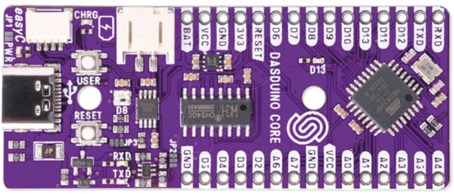
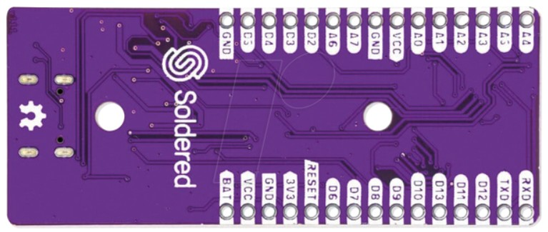
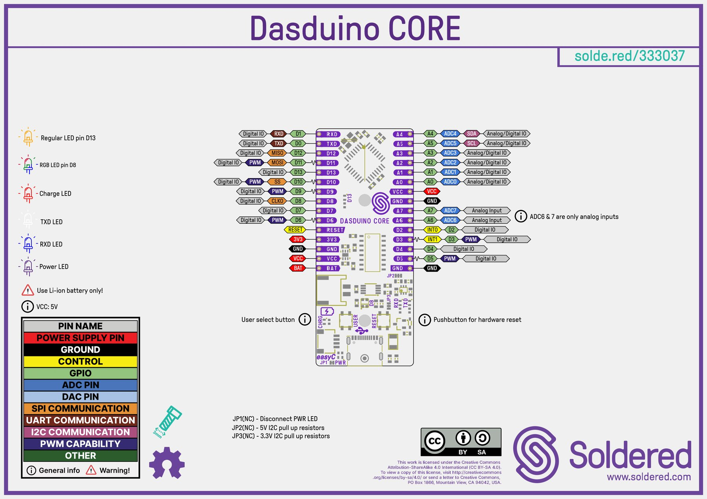

Poglavlje 2 · Dasduino CORE pločica
Dasduino CORE – izvodi
Na vježbama koristimo pločicu Dasduino CORE hrvatske tvrtke Soldered. Ima isti mikroupravljač kao Arduino UNO (ATmega328P na 16 MHz) i iste brojeve izvoda, pa svi programi iz ove zbirke rade bez izmjena. Manja je, ima USB-C priključak i može se utaknuti izravno u eksperimentalnu pločicu.
Izgled pločice


Osnovni podaci
| Mikroupravljač | ATmega328P (isti kao na Arduino UNO) |
|---|---|
| Takt | 16 MHz, kvarcni kristal |
| Radni napon | 5 V (s USB-a) |
| Memorija | Flash 32 KB (od toga 0,5 KB zauzima bootloader), SRAM 2 KB, EEPROM 1 KB |
| Izvodi | 22: digitalni D0 – D13 i analogni A0 – A7. A6 i A7 su samo analogni ulazi. |
| PWM izlazi | D3, D5, D6, D9, D10, D11 (na rasporedu izvoda označeni valovitom crtom) |
| Struja izvoda | preporučeno najviše 20 mA po izvodu, apsolutni maksimum 40 mA |
| USB | USB-C; USB-UART pretvarač CH340C; osigurač 500 mA |
| Baterija | priključak za Li-ion bateriju 3,7 V i punjač TP4056 (puni strujom oko 400 mA) |
| Stabilizator | 3,3 V za module koji rade na 3,3 V |
| Komunikacija | UART, SPI, I²C (i preko priključka easyC) |
| Dimenzije | 63 × 25,9 mm, 12 g; redovi izvoda razmaknuti 22,86 mm (0,9 in) |
Raspored izvoda

Izvodi su u dva reda po 15. Kad je USB-C priključak lijevo, a oznake okrenute prema vama, redovi izgledaju ovako:
| Gornji red | BAT | VCC | GND | 3V3 | RESET | D6 | D7 | D8 | D9 | D10 | D13 | D11 | D12 | TXD | RXD |
|---|---|---|---|---|---|---|---|---|---|---|---|---|---|---|---|
| Donji red | GND | D5 | D4 | D3 | D2 | A6 | A7 | GND | VCC | A0 | A1 | A2 | A3 | A5 | A4 |
Za razliku od Arduina UNO, izvodi nisu poredani redom brojeva. Prije spajanja uvijek pročitajte oznaku uz izvod.
Izvodi za napajanje
| Izvod | Opis |
|---|---|
| VCC | Napajanje mikroupravljača. Kad je spojen USB, na njemu je 5 V. Kad pločica radi samo s baterije, na njemu je približno napon baterije (3,7 – 4,2 V). |
| 3V3 | Izlaz stabilizatora 3,3 V. Služi za napajanje senzora i modula koji rade na 3,3 V. |
| BAT | Izravno spojen na priključak baterije. Smije se spojiti samo Li-ion baterija 3,7 V. |
| GND | Masa (0 V). Na pločici su tri izvoda GND i svi su međusobno spojeni. |
| RESET | Spajanjem na GND mikroupravljač se ponovno pokreće, isto kao pritiskom tipke RESET. |
Digitalni izvodi
| Izvod | Posebne funkcije | Napomena |
|---|---|---|
| D0 (oznaka TXD) | UART RX | Koristi ih USB veza s računalom (prijenos programa i Serial monitor). Na vježbama ih ne koristimo za LED diode i tipkala. Oznake TXD i RXD na pločici napisane su s gledišta USB čipa CH340C, zato je D0 označen kao TXD. |
| D1 (oznaka RXD) | UART TX | |
| D2 | vanjski prekid INT0 | |
| D3 | PWM, vanjski prekid INT1 | |
| D4 | – | |
| D5 | PWM | |
| D6 | PWM | |
| D7 | – | Na njega je spojena tipka USER. Pritisnuta tipka spaja D7 na GND. |
| D8 | CLKO | Na njega je spojena RGB LED dioda WS2812B. Ako D8 koristite za nešto drugo, RGB dioda može neočekivano zasvijetliti. |
| D9 | PWM | |
| D10 | PWM, SPI SS | |
| D11 | PWM, SPI MOSI | |
| D12 | SPI MISO | |
| D13 | SPI SCK | Na njega je spojena narančasta LED dioda D13. |
Analogni izvodi
| Izvod | Funkcija | Napomena |
|---|---|---|
| A0 – A3 | analogni ulaz (ADC0 – ADC3) ili digitalni izvod | 10-bitni A/D pretvornik: analogRead() vraća 0 – 1023 za napon 0 – 5 V. |
| A4 | analogni ulaz ili I²C SDA | Isti vodovi idu i na priključak easyC. Ako koristite I²C modul, A4 i A5 ne koristite za druge namjene. |
| A5 | analogni ulaz ili I²C SCL | |
| A6, A7 | samo analogni ulaz | Ne mogu se koristiti kao digitalni izvodi. Arduino UNO ih nema. |
Elementi na pločici
| Element | Opis |
|---|---|
| USB-C priključak | Napajanje, prijenos programa i serijska veza s računalom preko čipa CH340C. |
| Tipka RESET | Ponovno pokreće program od početka. |
| Tipka USER | Tipkalo za vlastite programe, spojeno na D7. |
| LED PWR (ljubičasta) | Svijetli kad pločica ima napajanje. |
| LED D13 (narančasta) | Spojena na D13; ista kao ugrađena LED dioda na Arduinu UNO. |
| RGB LED D8 | Adresabilna LED dioda WS2812B na D8. Upravlja se bibliotekom, npr. Adafruit NeoPixel. |
| LED RXD i TXD (plava i bijela) | Trepću dok se prenosi program ili podaci preko USB-a. |
| LED CHRG (crvena) | Svijetli dok se baterija puni. |
| Priključak za bateriju | JST, dva kontakta, za Li-ion bateriju 3,7 V. Kad je spojen USB, pločica se napaja s USB-a i puni bateriju. |
| Priključak easyC | Soldered priključak za module s I²C sabirnicom (kompatibilan s Qwiic). Radi na 3,3 V, a pretvarač razina ga povezuje s A4 i A5. |
| Kratkospojnici JP1, JP2, JP3 | JP1: prerezivanjem se isključuje LED PWR, npr. radi manje potrošnje na bateriji. JP2 i JP3: spajanjem se uključuju pull-up otpornici za I²C na strani 5 V (JP2) ili 3,3 V (JP3). |
Fritzing dio
Za crtanje spojeva u programu Fritzing pripremljen je dio Dasduino CORE s prikazom pločice, shemom i PCB prikazom. Položaji izvoda preuzeti su iz Solderedovog KiCad projekta, pa izvodi točno sjedaju u rupe eksperimentalne pločice.
- Preuzmite datoteku
Dasduino-CORE.fzpz. - U Fritzingu odaberite File → Open i otvorite preuzetu datoteku, ili je mišem povucite u prozor Fritzinga.
- Dio se pojavi u skupini MINE u popisu dijelova. Odatle ga povucite na eksperimentalnu pločicu kao i svaki drugi dio.
Programiranje u Arduino IDE
- U File → Preferences, u polje Additional boards manager URLs dodajte adresu:
https://github.com/SolderedElectronics/Dasduino-Board-Definitions-for-Arduino-IDE/raw/master/package_Dasduino_Boards_index.json - U Tools → Board → Boards Manager potražite dasduino i instalirajte paket Dasduino AVR Boards. U novijim paketima pločica se zove NULA CORE, pa instalirajte NULA AVR Boards.
- U Tools → Board odaberite Dasduino CORE (ATmega328P), odnosno NULA CORE (ATmega328P).
- Spojite pločicu USB-C kabelom i u Tools → Port odaberite njen COM priključak. Ako se priključak ne pojavi, instalirajte upravljački program za čip CH340.
Primjer: tipka USER i LED dioda D13
Program pali LED diodu D13 dok držite tipku USER. Za ovaj primjer ne treba spajati ništa, jer su obje komponente već na pločici. Tipka spaja D7 na GND, pa se koristi unutarnji pull-up otpornik (INPUT_PULLUP): otpuštena tipka daje HIGH, a pritisnuta LOW.
const int tipka = 7; //tipka USER je na D7 const int led = 13; //LED dioda D13 void setup() { pinMode(tipka, INPUT_PULLUP); //ulaz s unutarnjim pull-up otpornikom pinMode(led, OUTPUT); //izlaz za LED diodu } void loop() { if (digitalRead(tipka) == LOW) { //tipka pritisnuta digitalWrite(led, HIGH); //uključi LED diodu } else { digitalWrite(led, LOW); //isključi LED diodu } }
Usporedba s Arduino UNO
| Dasduino CORE | Arduino UNO R3 | |
|---|---|---|
| Mikroupravljač i takt | ATmega328P, 16 MHz | ATmega328P, 16 MHz |
| USB | USB-C, CH340C | USB-B, ATmega16U2 |
| Analogni ulazi | 8 (A0 – A7) | 6 (A0 – A5) |
| Vanjsko napajanje | Li-ion baterija 3,7 V s punjačem | priključak 7 – 12 V |
| Na pločici | LED D13, RGB LED, tipka USER, easyC | LED D13 |
| Veličina | 63 × 25,9 mm, stane u eksperimentalnu pločicu | 69 × 53 mm |
Sheme u zadacima nacrtane su za Arduino UNO. Kako su brojevi izvoda isti, vodič spojen na izvod 2 na Arduinu spojite na izvod D2 na Dasduinu, a GND na bilo koji od tri izvoda GND.